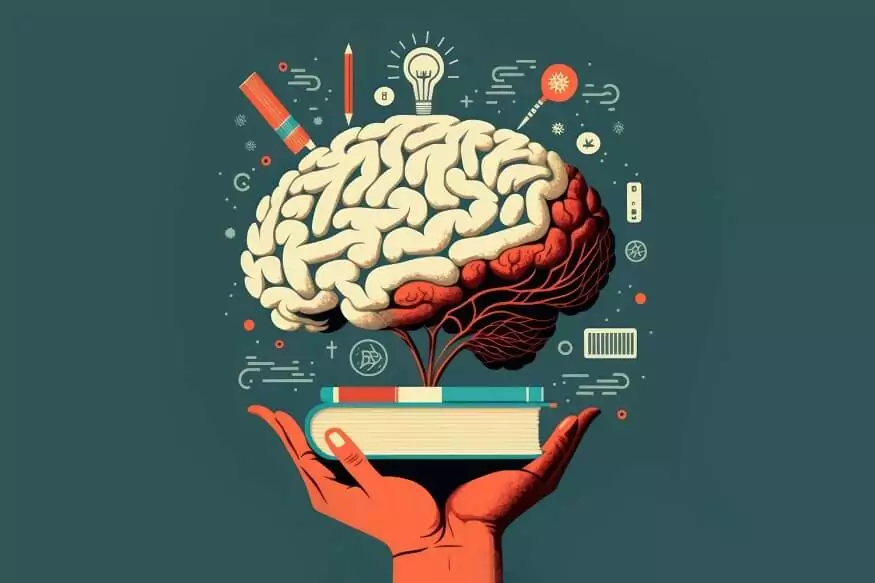
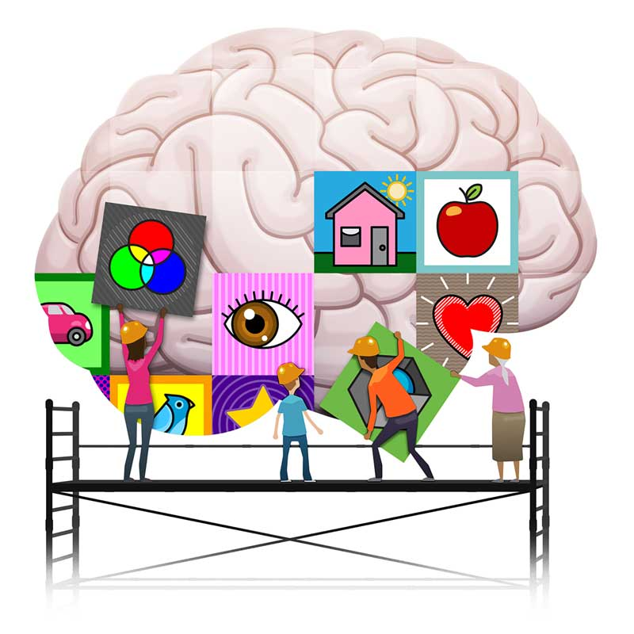

Mental development refers to the progressive growth and refinement of an individual's cognitive, emotional, and psychological capabilities over time. It encompasses the evolution of mental faculties, such as learning, memory, reasoning, problem-solving, and emotional regulation. This dynamic process is influenced by a combination of genetic, environmental, social, and cultural factors, making it a fascinating and multifaceted area of study. In this exploration, we will delve into the key aspects of mental development, its stages, influences, and the strategies that can enhance it throughout life.
Stages of Mental Development
Mental development is often viewed through the lens of various stages, each characterized by distinct cognitive and emotional milestones. Psychologists such as Jean Piaget and Erik Erikson have provided frameworks to understand this progression:

1. Infancy (0-2 years)
This stage is marked by rapid brain growth and the development of sensory and motor skills. Babies begin to explore their environment through their senses and develop basic cognitive skills, such as object permanence and cause-and-effect relationships. Emotional bonds with caregivers also play a critical role in forming a secure attachment, which influences later emotional stability.
2. Early Childhood (2-6 years)
During this phase, children develop language skills, imagination, and basic reasoning. Piaget referred to this stage as the "preoperational stage," where children begin symbolic thinking but struggle with understanding other perspectives. Emotional regulation starts to emerge, and social interactions with peers become more significant.
3. Middle Childhood (6-12 years)
Cognitive abilities such as logical reasoning, memory, and problem-solving improve significantly. Children enter Piaget's "concrete operational stage," where they grasp concepts like conservation and categorization. Erikson highlights this period as a time of developing a sense of competence and industry through academic and social achievements.
4. Adolescence (12-18 years)
This stage is characterized by abstract thinking, identity exploration, and emotional complexity. Adolescents develop the ability to think hypothetically, consider multiple perspectives, and plan for the future. Erikson described this as the stage of "identity vs. role confusion," where individuals seek to establish a sense of self.
5. Adulthood
Mental development continues into adulthood, with milestones varying based on life experiences and challenges. Young adults focus on intimacy and forming meaningful relationships, while middle-aged individuals may prioritize generativity, such as contributing to society and guiding the next generation. In later adulthood, mental development centers on reflection, wisdom, and adapting to cognitive changes associated with aging.
Influences on Mental Development
Several factors shape mental development, often interacting in complex ways:
1. Genetics
Genetic predispositions influence cognitive abilities, temperament, and mental health. However, genes do not act in isolation; they interact with environmental factors to shape mental development.

2. Environment
A stimulating and supportive environment is crucial for healthy mental development. Factors such as nutrition, exposure to language, access to education, and opportunities for play all contribute to cognitive and emotional growth.
3. Social Interactions
Relationships with family, peers, and mentors play a pivotal role in mental development. Positive interactions foster emotional security, social skills, and resilience, while adverse experiences can lead to developmental challenges.
4. Cultural Context
Cultural values and norms influence how individuals think, learn, and process emotions. For instance, collectivist cultures may emphasize interdependence and community, while individualist cultures may prioritize autonomy and self-expression.
5. Life Experiences
Events such as trauma, success, failure, and exposure to diverse perspectives shape mental development. Lifelong learning and adaptability are essential for navigating these experiences.
Enhancing Mental Development
Mental development is a lifelong process that can be actively nurtured through deliberate practices and habits:
1. Early Childhood Interventions
Providing a nurturing and stimulating environment during early childhood sets the foundation for lifelong mental development. Activities that encourage curiosity, exploration, and problem-solving are particularly beneficial.
2. Education and Lifelong Learning
Engaging in formal and informal learning opportunities throughout life enhances cognitive abilities and keeps the mind active. Reading, puzzles, and acquiring new skills are excellent ways to promote mental growth.
3. Physical Activity
Regular exercise improves brain health by increasing blood flow and stimulating the release of neurotrophic factors that support neuronal growth and connectivity.